L’exploitation par les populations

Pendant la période précoloniale (avant le XIXᵉ siècle). Avant l’arrivée des Européens, les populations locales exploitaient déjà certaines ressources :

Du ciel au sous sol, le Gabon regorge d'innombrables richesses.
Les couleurs du Drapeau vert jaune et bleu représentent d'ailleurs certaines d'entre elles.

La forêt

L'équateur
L'océan
Pendant la période précoloniale (avant le XIXᵉ siècle). Avant l’arrivée des Européens, les populations locales exploitaient déjà certaines ressources :

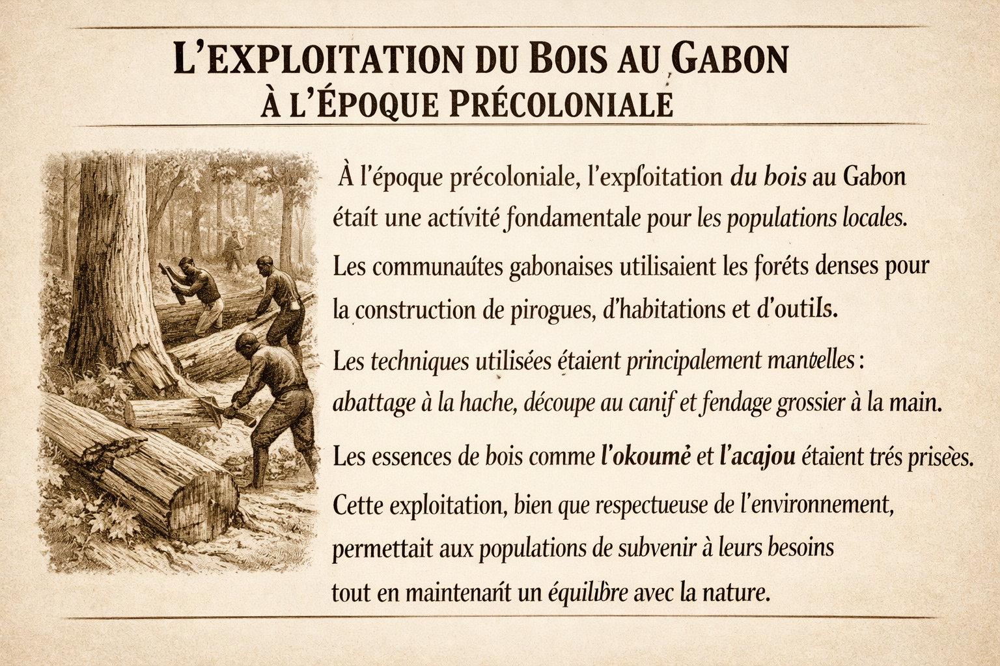
Avant la colonisation, le Gabon bénéficiait d’une abondance forestière remarquable, avec des essences prisées telles que l’iroko, le sipo et le bubinga. L’exploitation du bois reposait sur des techniques artisanales et communautaires : abattage manuel avec des haches et scies rudimentaires, façonnage sur place, puis transport par pirogues le long des rivières ou par portage sur de courtes distances.
Le bois servait essentiellement à la construction des habitations, à la fabrication d’outils et d’objets rituels, et constituait un produit d’échange précieux dans le commerce interethnique. Les pratiques étaient durables et adaptées à l’environnement local, reflétant une gestion intelligente des ressources forestières avant l’arrivée des exploitations coloniales à grande échelle.


Avant la colonisation, le commerce du caoutchouc au Gabon reposait sur une exploitation traditionnelle des ressources forestières, mais sous l’effet de la demande mondiale, il s’est intensifié rapidement.
Il a contribué à transformer l’économie locale et à accélérer la pénétration coloniale.
Par un regard de terrain, entre forêt dense et villages anciens…
Bien avant l’arrivée des Européens, les populations du territoire qui deviendra le Gabon vivaient en harmonie avec une forêt omniprésente. Ici, pas de grandes plantations mécanisées, mais une agriculture familiale, itinérante et profondément liée à la nature.
Dans ces clairières vivantes, se jouait l’essentiel de la subsistance.
Au centre de cette économie traditionnelle se dresse un arbre roi : le palmier à huile.
Présent naturellement dans tout le pays, il est exploité depuis des générations. Chaque partie de cet arbre est utile :
Déjà à l’époque, les populations transformaient les noix de palme à la main pour en extraire une huile précieuse, parfois échangée entre villages.
👉 Le palmier n’était pas seulement une culture : c’était un pilier économique et culturel.
Dans les champs, plusieurs cultures cohabitent. Cette diversité est essentielle.
Parmi les plus importantes :
Ces plantes sont souvent cultivées ensemble dans un même espace, un système appelé agriculture mixte ou agroforestière.
👉 Cette diversité protège les récoltes et assure une alimentation équilibrée.
Sans outils modernes, les populations maîtrisent pourtant parfaitement leur environnement.
Leur méthode repose sur :
Les champs ne sont pas permanents : ils se déplacent avec le temps, suivant le rythme de la forêt.
👉 Une forme d’agriculture durable avant l’heure.
Dans ce Gabon précolonial, l’agriculture n’est pas tournée vers l’exportation, mais vers la survie et l’équilibre communautaire.
Les excédents — huile de palme, tubercules, fruits — peuvent être échangés localement, mais la priorité reste claire :
👉 nourrir la famille et le village.
Ce voyage dans le passé révèle une réalité souvent oubliée :
Le Gabon précolonial possédait déjà un système agricole adapté, durable et intelligent.
Sans machines ni engrais chimiques, les populations avaient su :
Une leçon silencieuse venue du passé… et peut-être une piste pour l’avenir.
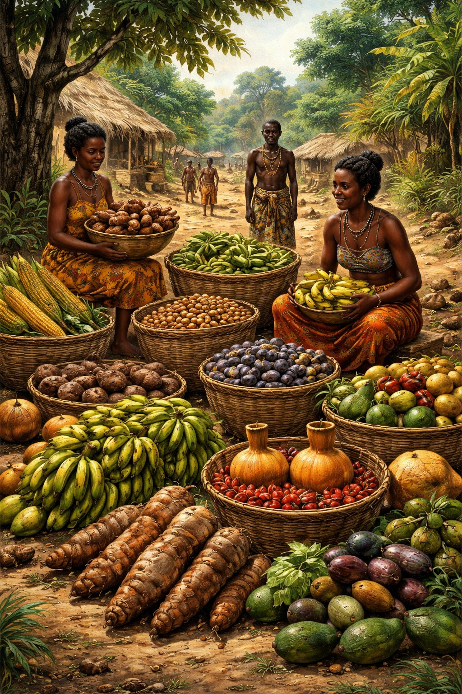
Mais cette exploitation restait artisanale et limitée.
De la fin du XIXᵉ au début du XXᵉ siècle débute l’exploitation coloniale.
L’exploitation intensive commence avec la colonisation française, notamment après :
Avant la colonisation européenne, le Gabon participait déjà à des réseaux commerciaux dynamiques, notamment autour de l’ivoire et de l’huile de palme.
Ces deux produits ont joué un rôle majeur dans l’économie et les relations entre les sociétés locales et les marchands étrangers.
Les chasseurs vendaient l’ivoire à des intermédiaires africains.
Ces intermédiaires l’acheminaient vers les côtes atlantiques.
Des commerçants européens (portugais, français, anglais) l’achetaient ensuite.
À partir du XIXe siècle (surtout après le déclin de la traite négrière), L’huile de palme devient un produit clé du commerce.
Forte demande européenne pour :
Les peuples gabonais (comme les Fang, Mpongwé, Orungu) jouaient un rôle central :
Certains groupes côtiers servaient d’intermédiaires privilégiés avec les Européens.
Avant la colonisation, le commerce de l’ivoire et de l’huile de palme au Gabon était déjà bien structuré et intégré dans des réseaux internationaux.
Ces activités ont enrichi certaines sociétés locales, mais elles ont aussi ouvert la voie à une domination économique et politique étrangère.

Cette période marque le début d’une exploitation organisée et industrielle.
L’intégration de la France en Afrique centrale est un phénomène historique, politique, économique et culturel profondément enraciné.
Elle ne correspond pas à une “intégration régionale” classique (comme celle entre États africains), mais plutôt à une influence durable héritée de la colonisation et maintenue à travers divers mécanismes après les indépendances.
L’intégration française en Afrique centrale trouve son origine dans la période coloniale (fin XIXe – milieu XXe siècle).
La France contrôlait plusieurs territoires regroupés dans l’Afrique équatoriale française (AEF). Ces territoires incluaient notamment :
Cette période a permis à la France de mettre en place :
Même après les indépendances dans les années 1960, ces bases sont restées.
De grandes entreprises françaises sont présentes dans la région :
La France est liée à la monnaie utilisée dans plusieurs pays d’Afrique centrale : Le franc CFA (XAF), utilisé dans la zone CEMAC
👉 Cela suscite des débats sur la souveraineté économique de ces pays.
L’intégration française en Afrique centrale est critiquée :
Certains pays cherchent aujourd’hui à diversifier leurs partenaires (Chine, États-Unis, etc.).
L’intégration de la France en Afrique centrale est le résultat d’une longue histoire et reste très visible aujourd’hui dans les domaines économique, politique et culturel.
Cependant, cette présence est de plus en plus remise en question, dans un contexte où les États africains cherchent à renforcer leur autonomie et à diversifier leurs relations internationales.
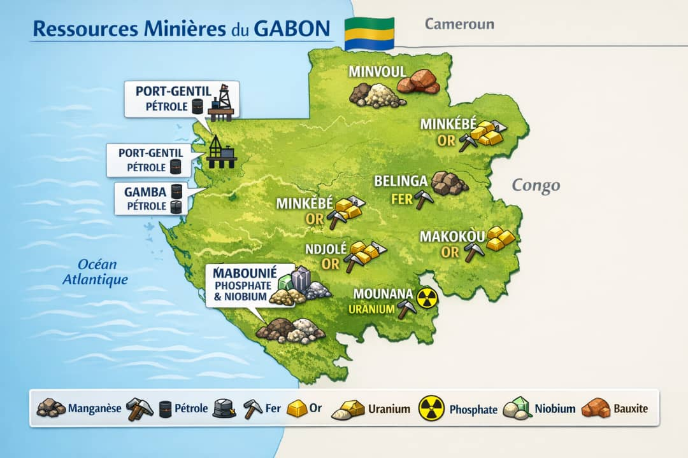

L’exploitation à grande échelle du manganèse débute à partir des années 1950.
Très abondant (parmi les plus grandes réserves mondiales).
Principal site : Moanda.
L’exploitation à grande échelle du manganèse débute à partir des années 1950.
Région : Moanda


L’exploitation du pétrole débute dans les années 1960 (juste avant et après l’indépendance en 1960).
Le pétrole devient la principale richesse du pays.
Exploité surtout au large (offshore) et dans certaines zones terrestres.
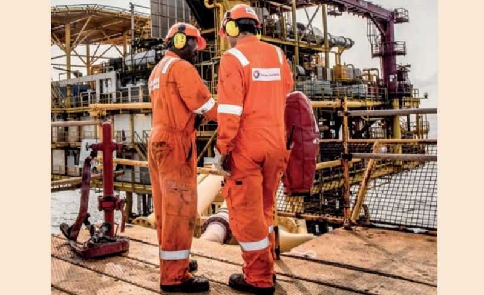


Exploité dans la région de Mounana (années 1960–1990).
Activité arrêtée aujourd’hui.
Important gisement (ex : région de Belinga).
Encore peu exploité à grande échelle.

Présent dans plusieurs régions.
Exploitation artisanale et industrielle.

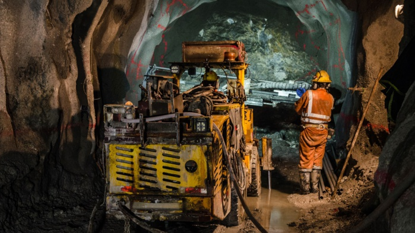
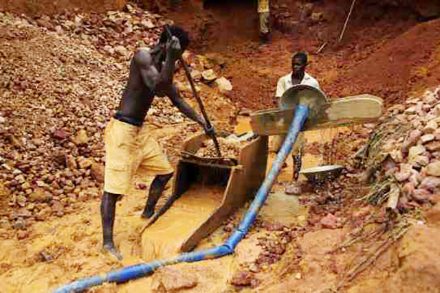
.jpg)

Souvent associé au pétrole.
Encore sous-exploité mais en développement.
.jpg)

Présents en quantités plus modestes.


Gisements identifiés mais peu exploités.
.jpg)
Le cuivre au Gabon se trouve principalement dans la province de la Nyanga, surtout vers Milingui mais il reste rarement exploité seul et apparaît souvent avec d’autres minerais.
Présence signalée (surtout exploitation artisanale).


Le Gabon possède la deuxième réserve mondiale de niobium
Utiles pour les technologies modernes.
Encore peu exploités.
Utilisés pour:

Le phosphate est une richesse clé pour :
Utilisée dans l’industrie pétrolière.

Argile utilisée en céramique et industrie.


Pour le verre et l’électronique.


🔋Potentiel en lithium et autres métaux rares.
Encore en exploration.
Toutes ces richesses ne sont pas exploitées actuellement. Certaines sont encore à l’état de gisement ou en exploration.
Le sous-sol du Gabon contient principalement.
plus d’images
Pendant longtemps, le pouvoir a été concentré entre peu de mains, notamment sous Omar Bongo et ensuite Ali Bongo Ondimba.
Une partie de l’argent du pétrole est mal utilisée ou détournée, peu de transparence dans la gestion des revenus.
l’argent ne profite pas à toute la population.
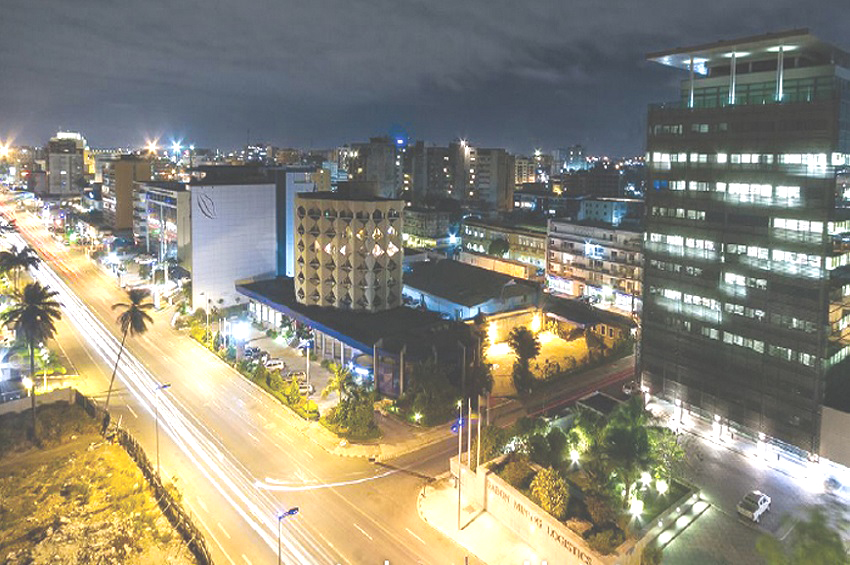

C’est un phénomène connu en économie (appelé malédiction des ressources).
Les pays riches en ressources naturelles ont souvent :
plus de corruption;
moins de diversification
plus d’inégalités.
Parce qu’il est “facile” de vivre du pétrole sans développer d’autres secteurs..
Le Gabon dépend fortement du pétrole et des matières premières.
Mais il développe peu :
l’agriculture;
l’industrie locale;
les PME.
peu d’emplois pour les jeunes, économie fragile.
Même si l’État a de l’argent ,certains projets sont mal planifiés ,abandonnés ou concentrés dans certaines zones (ex : Libreville).
développement inégal entre les régions infrastructures, insuffisantes ailleurs.
Les grandes compagnies pétrolières ou minières sont souvent étrangères. Donc une partie des profits quitte le pays,peu de transformation locale (ex : export du bois brut au lieu de produits finis).
Le Gabon pourrait être très prospère pour toute sa population, mais la corruption, la dépendance au pétrole et les inégalités empêchent une vraie redistribution des richesses.
Le problème du Gabon n’est pas le manque de richesses mais plutôt la manière dont elles sont gérées et réparties.
la précarité persistante au Gabon ne s’explique pas par un manque de richesses, mais par une mauvaise gestion, une forte inégalité dans leur répartition et un modèle économique peu créateur d’emplois.
Pour améliorer la situation, il serait nécessaire de mieux redistribuer les revenus, de diversifier l’économie et d’investir davantage dans le développement social.
La dette correspond à l’argent que l’État gabonais doit rembourser à :
Le Gabon a une dette relativement élevée, environ 60 à 70 % du PIB (variable selon les années). Cela représente plusieurs milliards d’euros.
Ce niveau est considéré comme élevé pour un pays riche en pétrole.
Le Gabon dépend fortement du pétrole.
Quand les prix baissent, les revenus de l’État diminuent .
le pays doit emprunter pour continuer à fonctionner
L’État finance des routes des infrastructures des projets publics mais ses projets sont arfois mal planifiésou trop coûteux par conséquent cela augmente la dette.
gaspillage
corruption
dépenses publiques élevées
plus d’emprunts nécessaires
baisse du prix du pétrole
pandémie de COVID-19
Ces crises ont réduit les recettes et augmenté les dépenses.
👉 Une partie du budget sert à :
Rembourser la dette
payer les intérêts
➡️ Donc moins d’argent pour les écoles les hôpitaux et les infrastructures
👉 Si la dette devient trop élevée le pays perd de confiance des investisseurs et rencontre des difficulté à emprunter
👉 Le Gabon dépend de créanciers internationaux comme le fonds monétaire international (FMI)
➡️ Ces institutions imposent parfois des réformes économiques.
✔️ Réduire la dépendance au pétrole ;
✔️ Mieux gérer les finances publiques ;
✔️ Lutter contre la corruption ;
✔️ Développer d’autres secteurs économiques ;
✔️ Augmenter les recettes (impôts mieux collectés) .
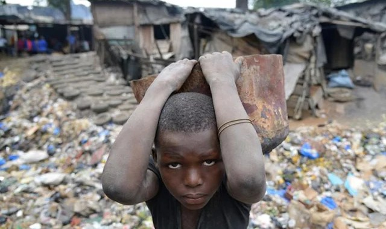
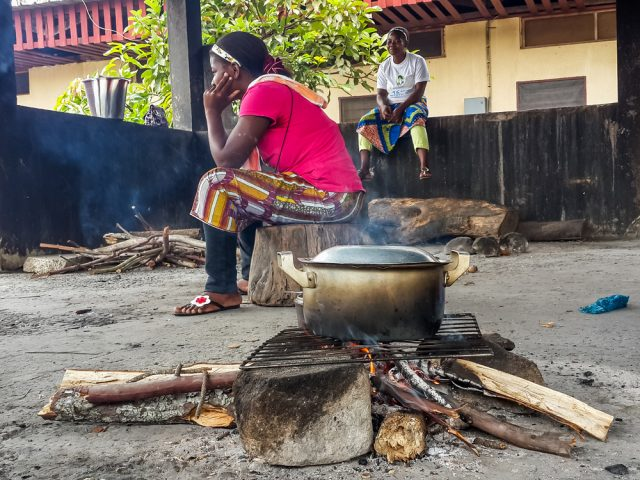
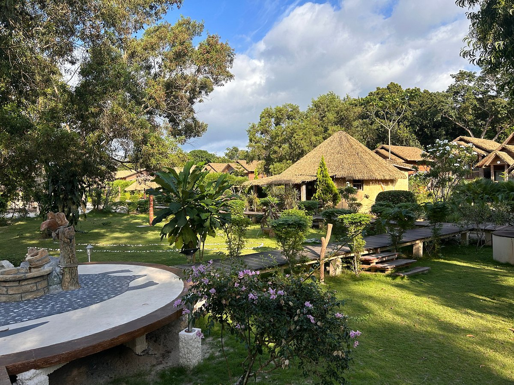
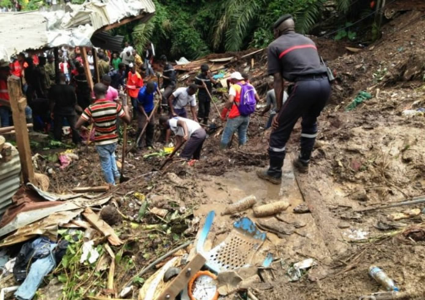

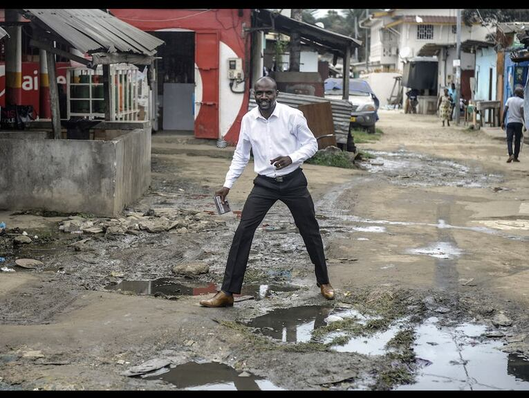
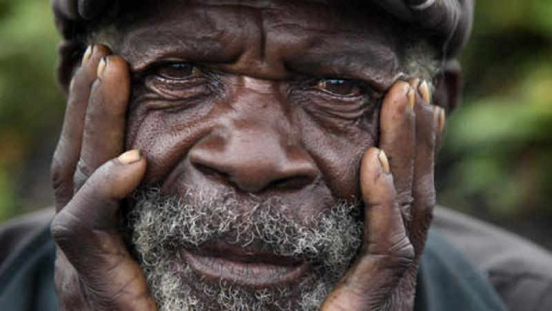
Une petite partie de la population (élites, hauts fonctionnaires, grandes entreprises) capte une grande part des richesses.
Pendant ce temps, beaucoup de Gabonais ont unaccès limité à l’emploi, aux soins et à une l’éducation de qualité.
Cela crée un écart très important entre riches et pauvres.
Le Gabon est un pays riche en ressources naturelles comme le pétrole, le bois et les minerais, exploitées depuis près d’un siècle. Pourtant, une grande partie de sa population vit encore dans la précarité.
Cette situation s’explique par plusieurs facteurs historiques, économiques et politiques.
Tout d’abord, l’histoire coloniale a fortement influencé l’économie du pays. Sous la domination de la France, les ressources du Gabon étaient principalement exploitées pour enrichir la métropole, sans réel développement local.
Après l’indépendance, cette organisation économique a perduré, avec une économie toujours tournée vers l’exportation de matières premières brutes.
Ensuite, les richesses du Gabon sont concentrées entre les mains d’une minorité. Une élite politique et économique capte une grande partie des revenus, notamment sous des régimes comme celui de Omar Bongo.
Cette mauvaise répartition empêche une redistribution équitable des richesses vers l’ensemble de la population.
De plus, la corruption et la mauvaise gestion des fonds publics limitent les investissements dans les services essentiels. Une partie importante des revenus issus du pétrole n’est pas utilisée pour améliorer les conditions de vie des citoyens, ce qui freine le développement du pays.
Par ailleurs, les secteurs dominants comme le pétrole et les mines créent peu d’emplois, car ils sont très mécanisés. Cela entraîne un chômage élevé, notamment chez les jeunes, et limite les opportunités économiques pour la population.
Aussi, le développement est inégal selon les régions. Les grandes villes comme Libreville concentrent la majorité des infrastructures et des investissements, tandis que les zones rurales restent peu développées.
la précarité persistante au Gabon ne s’explique pas par un manque de richesses, mais par une mauvaise gestion, une forte inégalité dans leur répartition et un modèle économique peu créateur d’emplois.
Pour améliorer la situation, il serait nécessaire de mieux redistribuer les revenus, de diversifier l’économie et d’investir davantage dans le développement social.
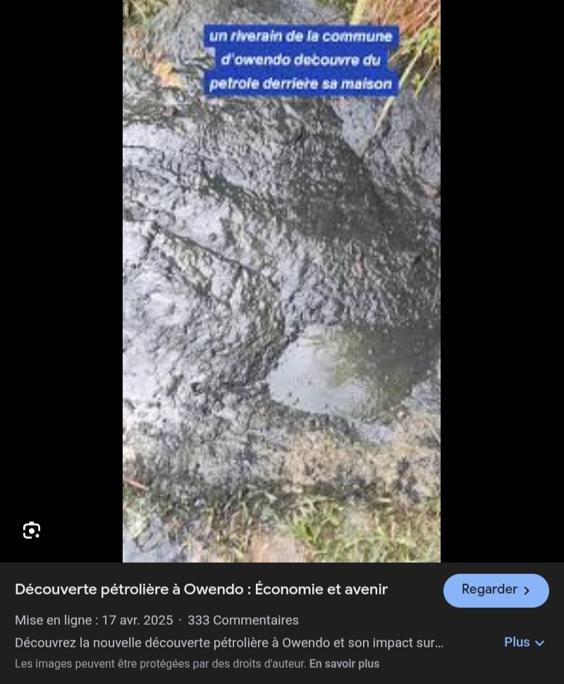
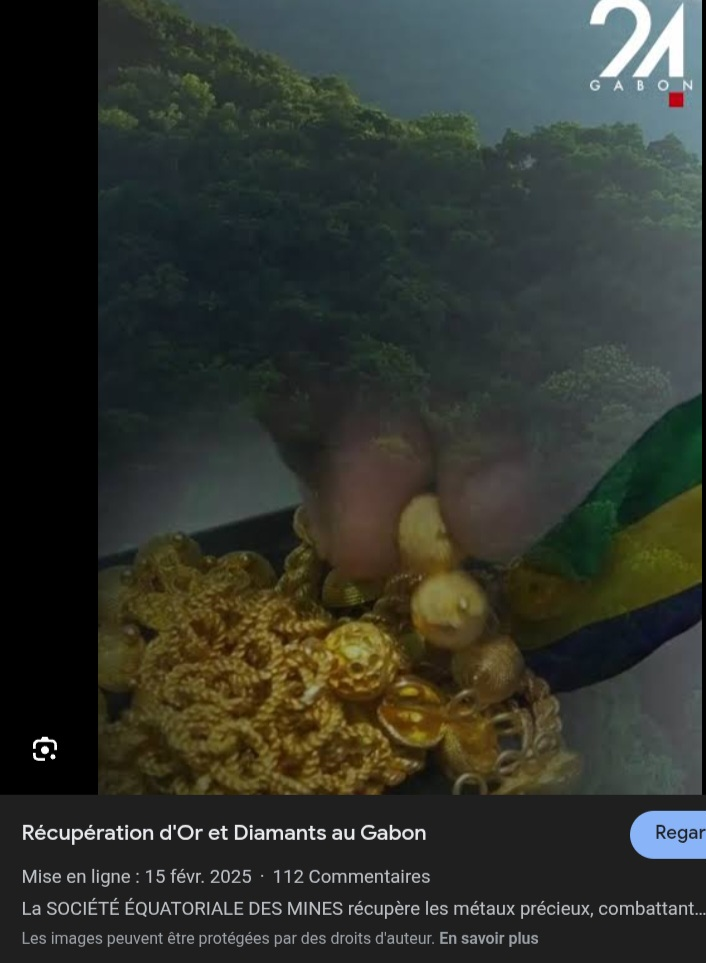
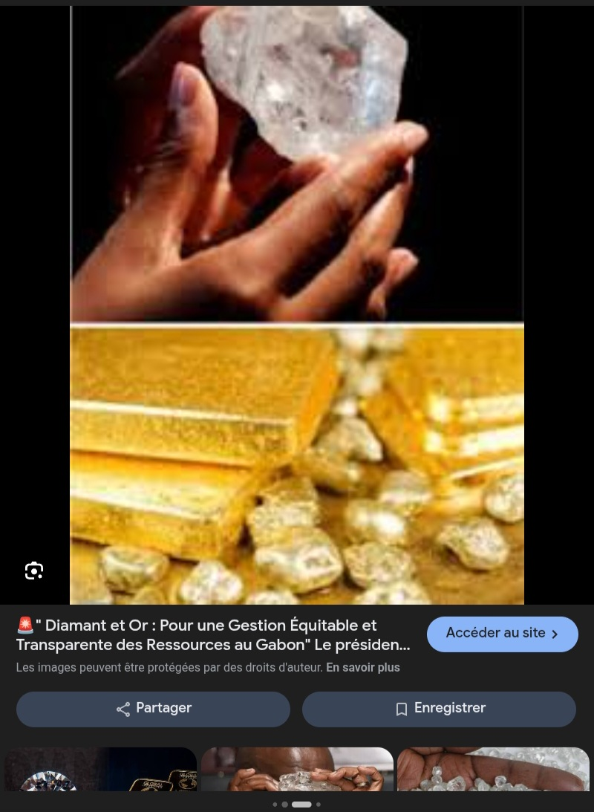
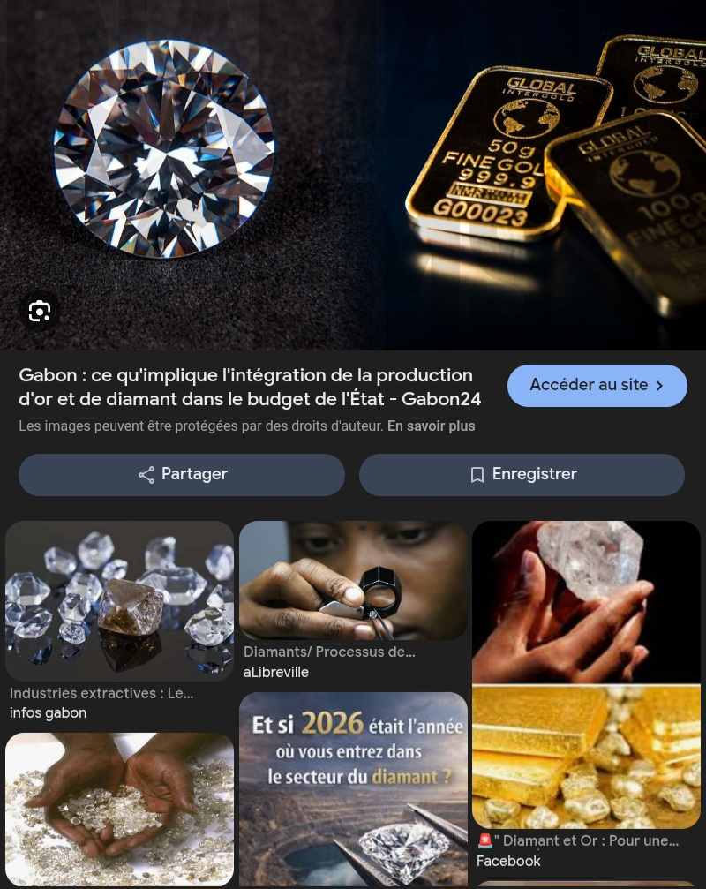
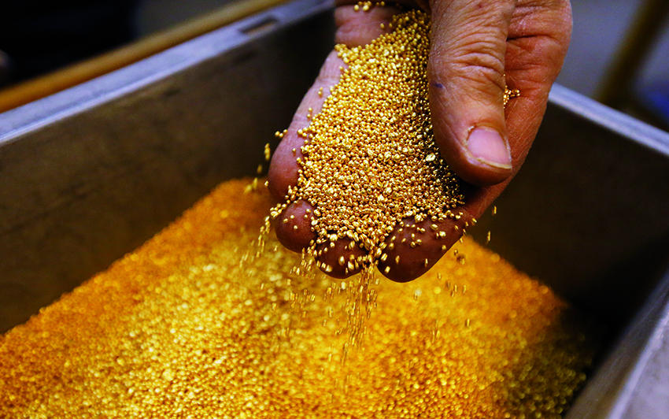
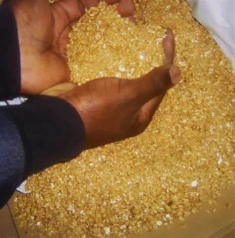
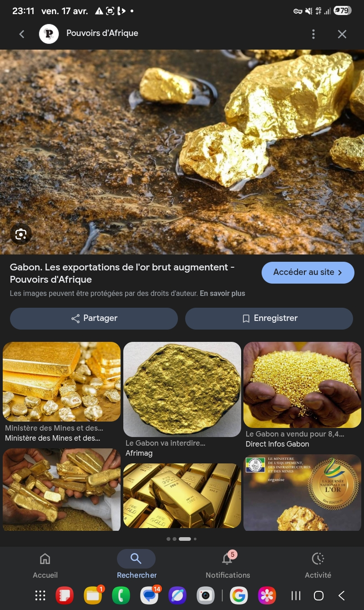
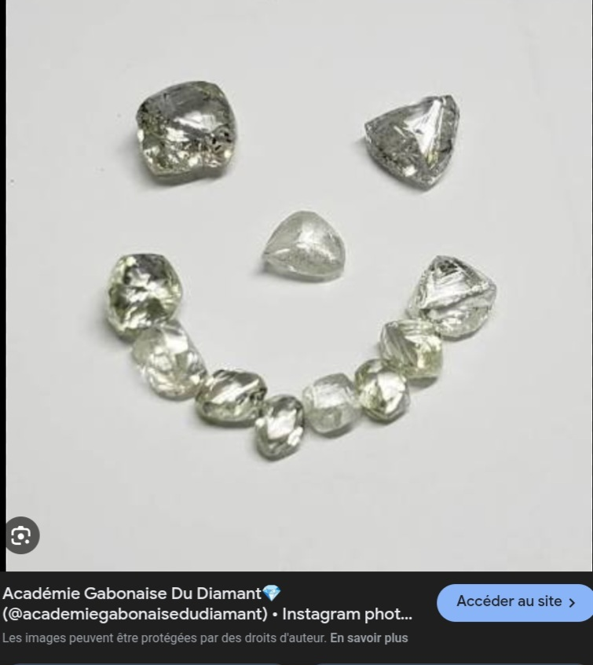
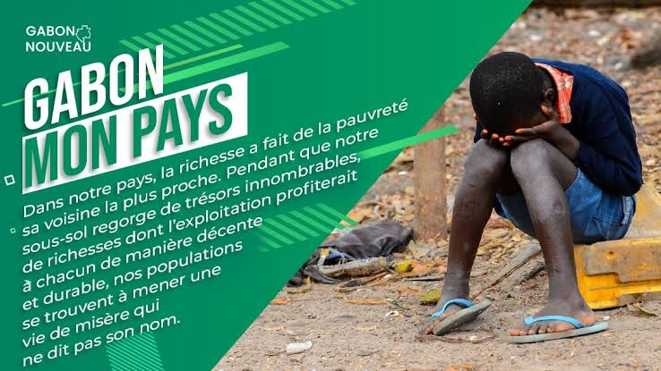
AVEC TOUT ÇA, DE QUI SE MOQUE T-ON ?
Les dirigeants ont-ils la volonté et la capacité de sortir le peuple gabonais de la précarité ?
nos commentaires pour plus tard...